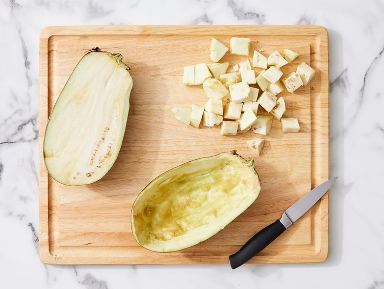

This delicious stuffed eggplant with a cheesy top is a must-try recipe! Great as a hearty main but you can buy
the mini eggplants and use them for a side dish or appetizer.
This stuffed eggplant recipe is healthy, filling, and will please even the pickiest eaters.
Ingridients
Eggplant: You’ll need one eggplant (halved lengthwise) to make two servings.
Olive oil: Brush the shells with olive oil before seasoning with salt and pepper.
Seasonings: This stuffed eggplant is seasoned with salt, pepper, fresh garlic, and fresh basil.
Sausage: Sweet Italian sausage makes this stuffed eggplant a hearty, crowd-pleasing meal.
Vegetables: An onion and fresh mushrooms lend texture and flavor.
Bread crumbs: Italian-seasoned panko bread crumbs give the stuffed eggplant a welcome crunch.
Cheese: For the most delicious results, grate your own Parmesan cheese instead of using the pre-shredded
stuff.
Steps:
Gather ingredients. Preheat the oven to 350 degrees F (175 degrees C). Line a rimmed baking sheet with foil.
Cut around the edge of the flesh in each eggplant half using a sharp paring knife, leaving a 1/2-inch
border. Scoop out flesh using a spoon, leaving 1/2-inch-thick shell; reserve flesh and chop into bite-size
pieces.

Brush shells with 2 tablespoons olive oil and season with salt and pepper; set aside.
Heat remaining 1 tablespoon olive oil in a large, deep skillet over medium high heat. Add sausage, onion,
mushrooms, and garlic; cook and stir until sausage is evenly brown. Stir in reserved chopped eggplant and
basil. Add pasta sauce; cook and stir for 5 minutes. Mix in 1/2 cup of panko and 1/4 cup Parmesan cheese.
Stuff mixture into eggplant shells. Combine remaining panko and cheese in a small bowl; sprinkle over stuffing.
Bake in preheated oven until eggplant is tender, 45 to 50 minutes.